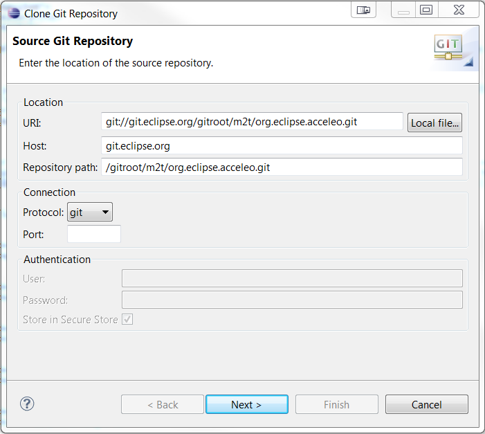
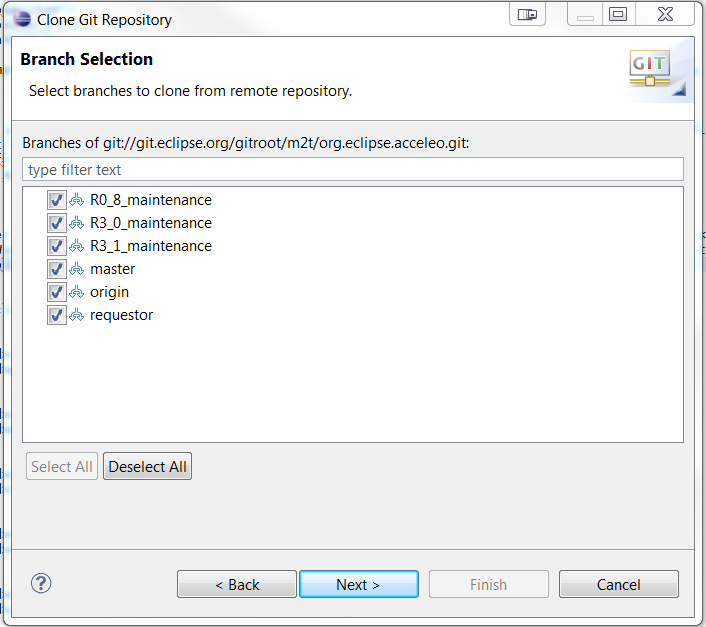
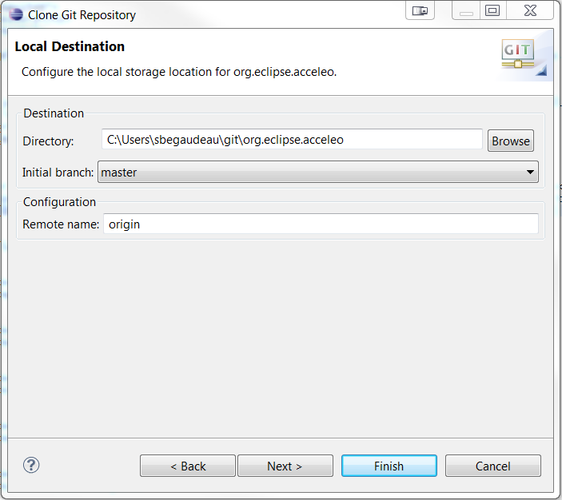
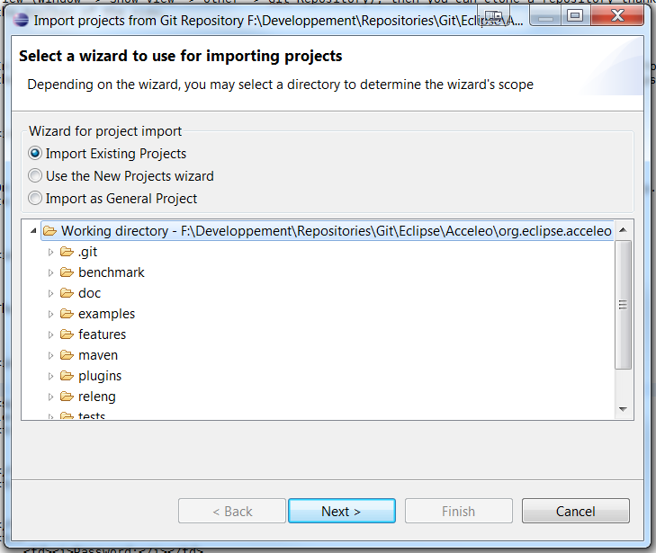

The complete source code for Intent is publicly available from the Eclipse.org Git repository.
If you just want to browse the source code from your usual web browser without checking out all the project's code in your environment, you can use this link: Browse Intent source code.
In order to use the following repository location in Eclipse, copy the location URL, open the Git repositories view (Window -> Show View -> Other -> Git Repository), then you can clone a repository thanks to a dedicated button in the toolbar of the view.
In the first page of the wizard, you can enter the information of the Intent repository. You can just copy and paste one of the location of the Acceleo repository found at the bottom of the Intent repository page.

On the next page, you can configure the branches that you will checkout from the repository. It is recommended to checkout all the branches in order to have all the source code of Acceleo.

Then you can configure where the repository will be cloned.

After this, you can select the eclipse projects that will be imported in your workspace to start to work.
